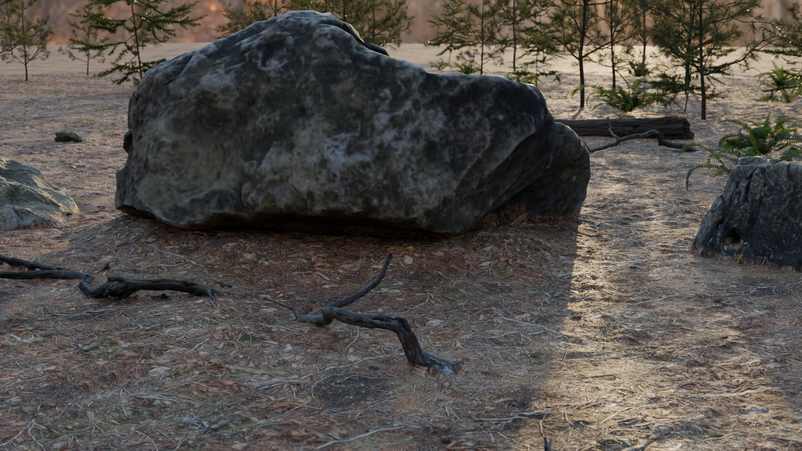
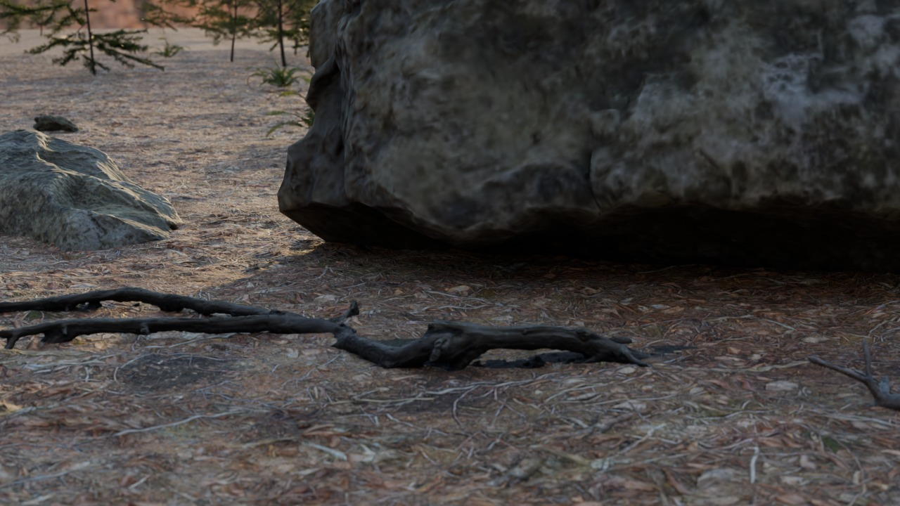
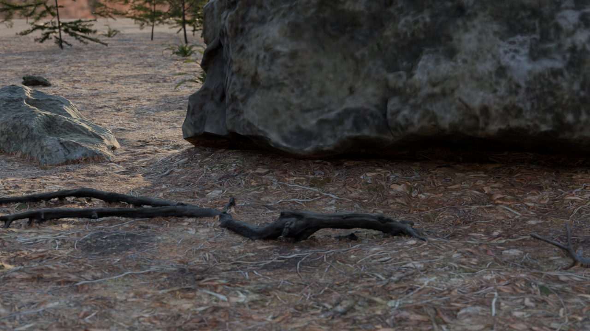
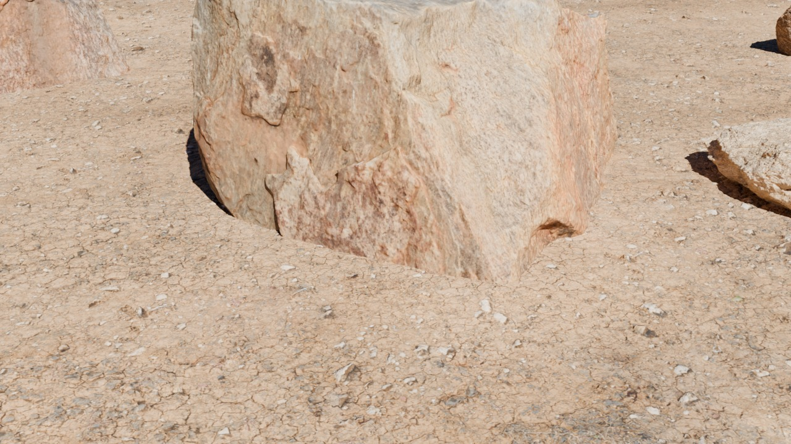
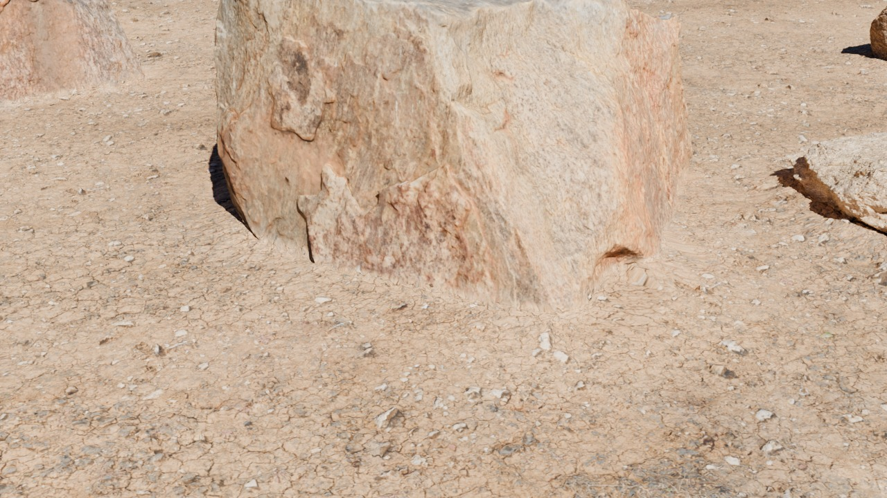
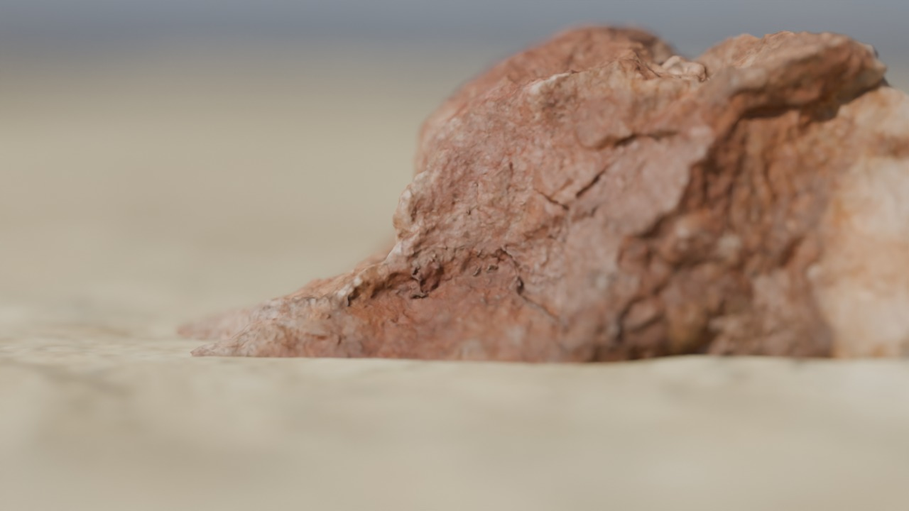
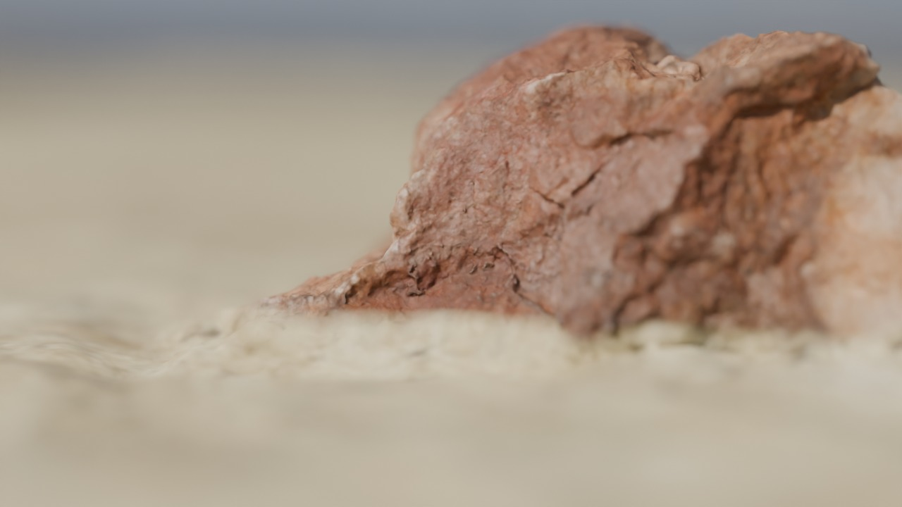
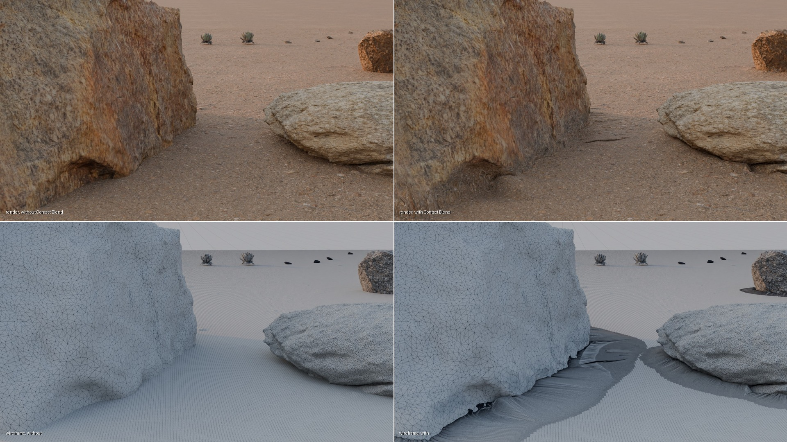

Contact Blend sinks rocks, roots and props into a terrain without booleans. Instead of cutting your objects, it bends the ground up to meet them, welds the shading across the junction and lets the ground's material creep into the crevices. Nothing is destructive, and everything follows when you move or animate.

The hard line where a scanned rock pokes through a terrain is one of the quickest ways a render gives itself away. Contact Blend removes that line in three layers.
The terrain craters under each object and rides up its flanks as a small meniscus, so there is no intersection curve left to read as a seam. Your object's mesh is never touched.
Normals blend across the contact band, and fade out wherever the object would shadow itself, so coarse scans do not grow shadow shards in hard sun.
The ground's own shader is mixed into the object along a broken edge: soil in the cavities, rock on the ridges, at the ground's true texture scale.
Every object on a terrain craters the same shared surface. Neighbours whose contact bands overlap blend into one continuous field instead of fighting each other.
Contact, normal and material distances are fitted to what shows of each object above the ground, so a pebble and a boulder each get a sensible band without tuning.
It is a Geometry Nodes modifier. Move, rotate, scale, duplicate or animate and the contact follows. Remove it and your scene is exactly as it was.
Drag the handle. Switch to Wireframe to see what the add-on actually does to the ground: a subdivided contact island pulled up to each object, and untouched topology everywhere else.
Mossy rocks, pine roots and a fallen branch on leaf litter, low sun through young firs.


withoutwith Contact BlendFitted defaults on all five blended objects. Contact Distance 0.03–0.31 m, Material Blend half of that. Blend and evaluate: 86 s for the whole scene.
Five granite boulders and four small rocks on gravelly sand at sunrise; the two in front overlap each other's contact bands.


withoutwith Contact BlendFitted defaults on all nine objects. Contact Distance 0.03–0.48 m. Blend and evaluate: 712 s on a 4-core CPU, the heaviest of the three.
A 15 cm stone half-buried in micro-displaced sand under a raking sun.


withoutwith Contact BlendContact Distance 15.8 mm, Material Blend 7.9 mm, Normal Blend 10.5 mm. Hand-set: Ground Conform 0.5, edge Sharpness 0.35, Crevices 0.5. Blend and evaluate: 26 s.

Object > Contact Blend. The button always says what it is about to do, and why not when it cannot.The original terrain is hidden and a stand-in named <Ground> · Contact Blend draws it conformed to every object blended into it. It is parented to the original, so it follows it. Only faces near a contact are subdivided and moved; the cut is frozen so the surface cannot crack.
Each object carries a Contact Blend modifier that publishes its contact band to the ground, welds its normals, and writes two attributes for the shader: blend (distance to the ground as drawn) and cb_cavity (crevice or ridge).
Every node-material slot on the object gets its own copy with the ground's shader mixed in through an Edge Breakup group. Other users of the original material are untouched, and removing the blend restores the slots.
Duplicates join the same ground automatically. Node groups are version-stamped and rebuilt in place when you update the add-on, keeping your settings. A Diagnose button writes a report if something looks wrong.
| Setting | Where | What it changes |
|---|---|---|
| Contact Distance | Object | How far from the object the ground starts to rise. Fitted to a third of the smaller of the object's width and its height above the ground. |
| Ground Conform | Object | How strongly the ground is pulled to the object: 1 hugs it, 0 leaves it flat. |
| Normal Blend Distance | Object | Width of the band where the object's shading turns toward the ground's. |
| Material Blend Distance | Object | How far up the object the ground's material reaches. Defaults to half the Contact Distance. |
| Breakup · Sharpness · Crevices | Material | How ragged the material edge is, how hard its threshold, and how much it prefers cavities over ridges. |
| Contact Subdivisions | Shared ground | Extra resolution inside the contact island only. |
| Contact Smoothing | Shared ground | Stops the ground crumpling against rough scans. |
| Fit Size | Button | Re-fits every distance after you rescale or re-sink an object. |
Measured headless on a 4-core CPU with a 490,000-vertex ground (700 × 700 grid) and Contact Distance pinned to ⅓ m. Dense, overlapping layouts cost the most.
| Objects on the ground | Move one object | Re-evaluate everything |
|---|---|---|
| 1 | ≈ 0.8 s | ≈ 0.8 s |
| 10 | ≈ 1.5 s | ≈ 4.4 s |
| 30 | ≈ 3.9 s | ≈ 13.4 s |
Things worth knowing before you rely on it for a shot.
Download contact_blend-2.0.0.zip, then drag it into the Blender window, or use Edit > Preferences > Get Extensions > Install from Disk…. Requires Blender 5.0 or later.
Download contact_blend.py and install it from Edit > Preferences > Add-ons > Install from Disk…. Same code, no packaging.
python tools/build_dist.py # dist/contact_blend-2.0.0.zip blender -b -P demo/build_demos.py -- --wire # the three demo scenes and every render on this page